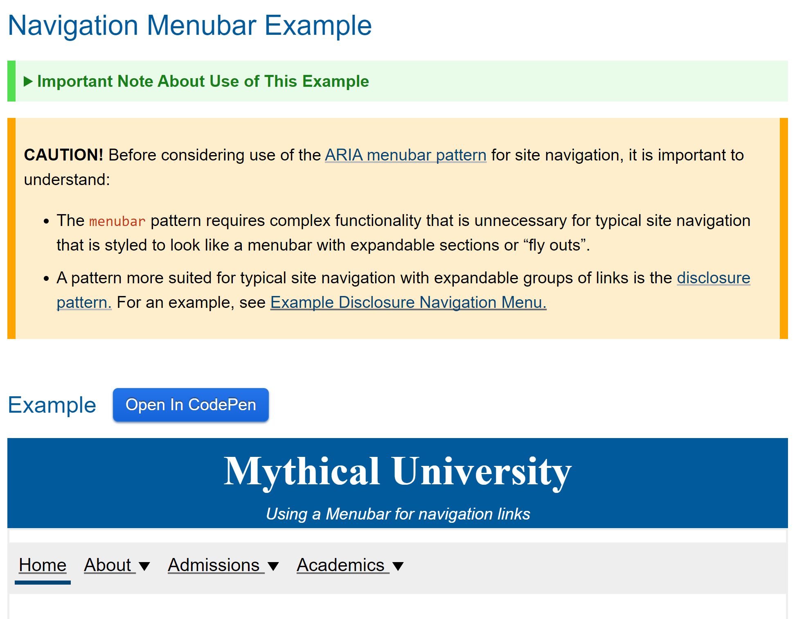

Venturing into Unmapped ARIAs
⬅️ who is this person?
What does the map look like?
Specs
Blogs, websites
Framework accessibility docs
Compare sources


Well-mapped components
Tables
Form errors
Where components look familiar, but with a twist
Planning your expedition
- Examine existing maps
- Prior art from further afield
- Interpret your sources, consider context
- What information is missing?
File selection
Step 1: inspect our maps
Step 2: Prior art
Evaluating Prior Art
web is not desktop, and desktop is not web
Windows: lists have... columns?
Finder: lists also have columns

Step 3: weigh sources
Step 4: what's missing?
- Focus target: checkbox, cell, or row?
- Checkbox name
- Checkbox columnheader name
Circle back on design
Grid
- ✅ exposes columns
- ❌ navigate through all cells separately
- ❌ not a selection-focused pattern
Listbox
- ❌ no columns, all one string
- ✅ selection control
- ✅ linear focus, similar to other file lists
Checking assumptions
- üî≤ Navigate by cell, not row
- üî≤ Put focus on the cell, but include a checkbox
- üî≤ Selection does not follow focus
The studies
Round 1:
Round 2:
Participant ATs:
Round 1:
- VoiceOver (2 people)
- JAWS (2 people)
- NVDA (2 people)
- Narrator
- Narrator + Refreshable Braille
- ZoomText at 12x
- Magnifier at 200%
- Smartbox Grid 3 Switch
- Dragon Professional
Round 2:
- JAWS
- JAWS + switch for typing
- NVDA (2 people)
- Narrator
- No AT, but 2 users had a mobility impairment
- Adesso ergonomic keyboard
- Switch
- Dragon Professional
Takeaways
- ✅ Navigate by cell, not row
- ✅ Put focus on the cell, but include a checkbox
- ✅ Selection does not follow focus
Takeaways: oops I didn't think of that
- Validation and confirmation messages are necessary
- Details matter: pay extra attention to naming
- Needing to switch screen reader modes can build up annoyance
- Bugs with virtual cursor table nav will make people abandon the task
- Double scrollbars when searching for info can be a huge burden
Death by 1000 Cats Cuts
Efficiency vs. Discoverability
- How many hours do users spend on this UI at a time?
- How many days per week to users visit?
- How tech-savvy are they?
(a shallow learning curve is almost always more important than you think)
BEWARE:
is this place cursed because no users return?
A brief example

Step 1: start small
Begin with one basic interaction, and define it
Step 2: break down keyboard navigation
How do you get from node A to node C?
Is the keyboard model similar to any existing patterns?
Step 3: zoom out
Search, find in page, filter
Focus on the basics
Labels, headings, page structure, user feedback
Changing the map
Is this button inside the tab? Next to it? Tab-accessible?
Be a cartographer!
Keep updating the map as you go, for the people who come after you.